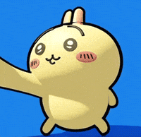
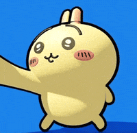

Lab 2 - My Introduction + about me
Precious intoduction
In my section today, I got help and ideas from Mason to build my website. She was very nice and gave me alot of insight for lab 2. Yeah, I enjoyed my time working on the webiste, she is very mindful and tries to figure out the problem. Now I have a better understanding adding things to my site. I think I am getting the hang of this. Hi my name is Precious, I am a 4th yr APGM major intrested in UX UI. I come from Sacramento. I like to make digital art, use figma, and try cultrual foods. I am an open minded person and stay postive. I like both STEM and art. My favorite cartoon character is Chiikawa and I am obbsessed with collecting cute small figures for my mini garden. I am also constanly looking at memes
 

My troubles
I think a problem I experince with was finding a partner in this class, This is because most people already found one to work on their assignments together with, so it has been quite hard to deal with work on your own and trying to find a person to problem solve with. I also think its kind of sad how no partner can effect your assignment performace. I tried to solve it asking the TA, being on discord, or get help from my classmates, But regardless it can still be a bit of a hassle.
My reflection
To be honest, This assignmnet kind of overwhelmed me. When I saw we had 3 things due on the same day. I was like- gosh how do I even get started on all of these assignments. But once I got started on it. I realized it wasnt so bad, I just needed reassurance from the TA and a classmate to understand what to do. And even asked questions on discord how I can make my site better. I think it's going well now. I put postive energy into this assignment.
My results
A decent website with an image plus my color prefrences.